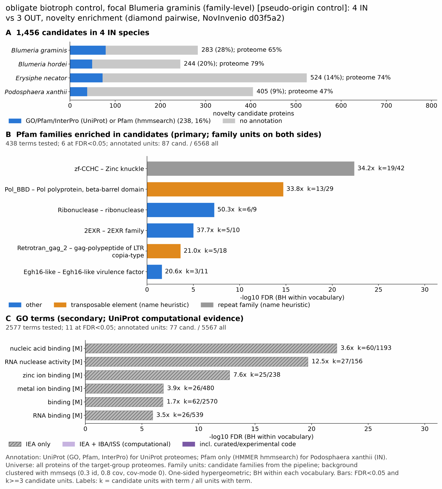

yc pseudo powdery mildew: functional enrichment (novelty)
One-sided hypergeometric test per term; Benjamini-Hochberg FDR within each scope, level and vocabulary. Candidates are the novelty candidates: gene families present in the IN group and absent from the OUT group. Universe: proteome. Background clustered: True (30320 sequences in 13448 clusters, mmseqs easy-cluster --min-seq-id 0.3 -c 0.8). Family level: one unit per candidate family and per background cluster.
Sources: Pfam: 2026-01-27-Pfam38.2; InterPro entries: 110.0; GO: releases/2026-07-26; analysis generated 2026-10-24T14:46:52. Source tables: /bigdata/stajichlab/jstajich/projects/NovInvenio_Investigations/studies/fungi/yeast_convergence/yc_pseudo_powdery_mildew/analysis/enrichment/outputs/proteome_clustered.
Full record: PROVENANCE. Run report: report.html.
- Annotation provenance is not fully recorded: PROVENANCE.yaml lists the per-species annotation files and their checksums, but not the UniProt release they come from.
- GO results are secondary. GO annotations include computational evidence (IEA, IBA); the GO evidence column shows if a term has non-IEA support.
- Candidate families (pipeline clustering of candidates) and background clusters (mmseqs clustering of the background proteome) are made by different runs, so family-level counts are not fully comparable.
- Low annotation: the candidate set has less than 50% annotation for Pfam 9.1%, InterPro 13.7%, GO 10.0%, any vocabulary 16.4%. Enrichment for these vocabularies has low power.
- GO and InterPro cover only 3 of 4 species: Blumgram, Blumhord, Erysneca. No GO and InterPro annotation for Podoxant; this species adds no units to the GO and InterPro tests, so those results describe the covered species only.
Summary figure

Annotation coverage
Fraction of proteins with at least one term per vocabulary. Universe = all proteins of the species; candidates = the candidate set.
| Species | Set | Proteins | Pfam | Pfam clan | InterPro | GO | Any |
|---|---|---|---|---|---|---|---|
| Blumgram | universe | 8255 | 59.3% | 47.6% | 64.5% | 55.2% | 64.7% |
| Blumgram | candidates | 283 | 11.7% | 7.4% | 27.9% | 20.5% | 27.9% |
| Blumhord | universe | 6486 | 73.9% | 58.2% | 78.4% | 69.1% | 78.7% |
| Blumhord | candidates | 244 | 7.4% | 3.3% | 20.1% | 14.3% | 20.1% |
| Erysneca | universe | 6482 | 68.6% | 54.7% | 73.7% | 64.2% | 73.8% |
| Erysneca | candidates | 524 | 8.2% | 5.3% | 13.7% | 9.9% | 13.7% |
| Podoxant | universe | 10553 | 47.0% | 37.1% | 0.0% | 0.0% | 47.0% |
| Podoxant | candidates | 405 | 9.4% | 5.2% | 0.0% | 0.0% | 9.4% |
| ALL_IN | universe | 31776 | 60.1% | 47.7% | 47.8% | 41.5% | 63.5% |
| ALL_IN | candidates | 1456 | 9.1% | 5.4% | 13.7% | 10.0% | 16.4% |
Tests summary
Per vocabulary: terms with FDR < 0.05 / terms tested. Protein level counts proteins; family level counts candidate families and background clusters.
| Scope | Level | Cand. units | Pfam sig / tested | Pfam clan sig / tested | InterPro sig / tested | GO sig / tested |
|---|---|---|---|---|---|---|
| whole_set | family | 846 | 6 / 438 | 3 / 236 | 7 / 746 | 11 / 2577 |
| whole_set | protein | 1456 | 10 / 1344 | 4 / 361 | 14 / 2369 | 17 / 3982 |
| Blumgram | family | 235 | 2 / 162 | 2 / 189 | 5 / 484 | 9 / 1837 |
| Blumgram | protein | 283 | 3 / 189 | 2 / 196 | 6 / 559 | 11 / 1879 |
| Blumhord | family | 157 | 1 / 180 | 0 / 198 | 2 / 515 | 6 / 2294 |
| Blumhord | protein | 244 | 1 / 208 | 0 / 203 | 1 / 586 | 8 / 2347 |
| Erysneca | family | 320 | 4 / 175 | 2 / 185 | 6 / 498 | 9 / 2171 |
| Erysneca | protein | 524 | 4 / 202 | 2 / 191 | 6 / 561 | 14 / 2212 |
| Podoxant | family | 318 | 4 / 286 | 3 / 193 | 0 / 0 (not_available_no_annotated_units) | 0 / 0 (not_available_no_annotated_units) |
| Podoxant | protein | 405 | 4 / 321 | 3 / 207 | 0 / 0 (not_available_no_annotated_units) | 0 / 0 (not_available_no_annotated_units) |
Top 25 Pfam terms (whole set, family level)
25 rows shown, ordered by FDR then p-value; 6 have FDR < 0.05 (bold). 9 are tagged TE: transposable-element families, flagged by name (heuristic, not a test).
| Term | Name | k / N cand. | n / M bg | Fold | FDR (BH) |
|---|---|---|---|---|---|
| PF00098 | zf-CCHC: Zinc knuckle | 19 / 87 | 42 / 6568 | 34.152 | 4.00e-23 |
| PF22936 | Pol_BBD: Pol polyprotein, beta-barrel domain TE | 13 / 87 | 29 / 6568 | 33.842 | 1.91e-15 |
| PF00545 | Ribonuclease: ribonuclease | 6 / 87 | 9 / 6568 | 50.33 | 5.39e-08 |
| PF20150 | 2EXR: 2EXR family | 5 / 87 | 10 / 6568 | 37.747 | 9.51e-06 |
| PF14223 | Retrotran_gag_2: gag-polypeptide of LTR copia-type TE | 5 / 87 | 18 / 6568 | 20.971 | 2.38e-04 |
| PF11327 | Egh16-like: Egh16-like virulence factor | 3 / 87 | 11 / 6568 | 20.589 | 0.025 |
| PF01753 | zf-MYND: MYND finger | 2 / 87 | 6 / 6568 | 25.165 | 0.157 |
| PF13358 | DDE_3: DDE superfamily endonuclease TE | 2 / 87 | 16 / 6568 | 9.437 | 1.000 |
| PF06687 | SUR7: SUR7/PalI family | 1 / 87 | 6 / 6568 | 12.582 | 1.000 |
| PF08550 | GATA_AreA: Nitrogen regulatory protein areA, GATA-like domain | 1 / 87 | 6 / 6568 | 12.582 | 1.000 |
| PF02535 | Zip: ZIP Zinc transporter | 1 / 87 | 7 / 6568 | 10.785 | 1.000 |
| PF13976 | gag_pre-integrs: GAG-pre-integrase domain TE | 1 / 87 | 8 / 6568 | 9.437 | 1.000 |
| PF17921 | Integrase_H2C2: Integrase zinc binding domain TE | 1 / 87 | 9 / 6568 | 8.388 | 1.000 |
| PF25597 | SH3_retrovirus: Retroviral polymerase SH3-like domain TE | 1 / 87 | 14 / 6568 | 5.392 | 1.000 |
| PF22799 | PIR1-like_C: Cell wall mannoprotein PIR1-like, C-terminal domain | 1 / 87 | 15 / 6568 | 5.033 | 1.000 |
| PF00085 | Thioredoxin: Thioredoxin | 1 / 87 | 19 / 6568 | 3.973 | 1.000 |
| PF00561 | Abhydrolase_1: alpha/beta hydrolase fold | 1 / 87 | 19 / 6568 | 3.973 | 1.000 |
| PF14529 | Exo_endo_phos_2: Endonuclease-reverse transcriptase TE | 1 / 87 | 20 / 6568 | 3.775 | 1.000 |
| PF12796 | Ank_2: Ankyrin repeats (3 copies) | 1 / 87 | 22 / 6568 | 3.432 | 1.000 |
| PF07727 | RVT_2: Reverse transcriptase (RNA-dependent DNA polymerase) TE | 1 / 87 | 23 / 6568 | 3.282 | 1.000 |
| PF00078 | RVT_1: Reverse transcriptase (RNA-dependent DNA polymerase) TE | 1 / 87 | 44 / 6568 | 1.716 | 1.000 |
| PF00172 | Zn_clus: Fungal Zn(2)-Cys(6) binuclear cluster domain | 1 / 87 | 47 / 6568 | 1.606 | 1.000 |
| PF00069 | Pkinase: Protein kinase domain | 1 / 87 | 111 / 6568 | 0.68 | 1.000 |
| PF00004 | AAA: ATPase family associated with various cellular activities (AAA) | 0 / 87 | 38 / 6568 | 0.0 | 1.000 |
| PF00005 | ABC_tran: ABC transporter | 0 / 87 | 26 / 6568 | 0.0 | 1.000 |
Top 25 InterPro terms (whole set, family level)
25 rows shown, ordered by FDR then p-value; 7 have FDR < 0.05 (bold).
| Term | Name | k / N cand. | n / M bg | Fold | FDR (BH) |
|---|---|---|---|---|---|
| IPR016191 | Homologous_superfamily:Ribonuclease/ribotoxin | 26 / 117 | 57 / 6506 | 25.365 | 1.32e-28 |
| IPR001878 | Domain:Zinc finger, CCHC-type | 23 / 117 | 49 / 6506 | 26.101 | 7.52e-26 |
| IPR036875 | Homologous_superfamily:Zinc finger, CCHC-type superfamily | 23 / 117 | 49 / 6506 | 26.101 | 7.52e-26 |
| IPR054722 | Domain:Retrovirus-related Pol polyprotein from transposon TNT 1-94-like, beta-barrel domain | 7 / 117 | 19 / 6506 | 20.487 | 3.99e-06 |
| IPR000026 | Family:Guanine-specific ribonuclease N1-like | 5 / 117 | 7 / 6506 | 39.719 | 5.26e-06 |
| IPR045518 | Domain:2EXR domain | 5 / 117 | 9 / 6506 | 30.893 | 2.55e-05 |
| IPR061502 | Domain:Copia/RE1/RE2-like, N-terminal domain | 4 / 117 | 14 / 6506 | 15.888 | 0.009 |
| IPR021476 | Family:GAS1/GAS2/TsrA | 3 / 117 | 11 / 6506 | 15.166 | 0.079 |
| IPR036397 | Homologous_superfamily:Ribonuclease H superfamily | 9 / 117 | 143 / 6506 | 3.5 | 0.085 |
| IPR021109 | Homologous_superfamily:Aspartic peptidase domain superfamily | 3 / 117 | 20 / 6506 | 8.341 | 0.386 |
| IPR032710 | Homologous_superfamily:NTF2-like domain superfamily | 2 / 117 | 7 / 6506 | 15.888 | 0.430 |
| IPR046342 | Homologous_superfamily:CBS domain superfamily | 2 / 117 | 11 / 6506 | 10.11 | 0.986 |
| IPR038717 | Domain:Tc1-like transposase, DDE domain | 2 / 117 | 12 / 6506 | 9.268 | 1.000 |
| IPR036691 | Homologous_superfamily:Endonuclease/exonuclease/phosphatase superfamily | 3 / 117 | 40 / 6506 | 4.171 | 1.000 |
| IPR036770 | Homologous_superfamily:Ankyrin repeat-containing domain superfamily | 2 / 117 | 26 / 6506 | 4.277 | 1.000 |
| IPR009571 | Family:Membrane protein SUR7/Rim9-like, fungi | 1 / 117 | 5 / 6506 | 11.121 | 1.000 |
| IPR002893 | Domain:Zinc finger, MYND-type | 1 / 117 | 6 / 6506 | 9.268 | 1.000 |
| IPR025724 | Domain:GAG-pre-integrase domain | 1 / 117 | 6 / 6506 | 9.268 | 1.000 |
| IPR052766 | Family:Peptidase S41 family protein phomP1/ustP/CSIN1 | 1 / 117 | 6 / 6506 | 9.268 | 1.000 |
| IPR003689 | Family:Zinc/iron permease | 1 / 117 | 7 / 6506 | 7.944 | 1.000 |
| IPR041588 | Domain:Integrase zinc-binding domain | 1 / 117 | 9 / 6506 | 6.179 | 1.000 |
| IPR057670 | Domain:Retroviral polymerase, SH3-like domain | 1 / 117 | 11 / 6506 | 5.055 | 1.000 |
| IPR015915 | Homologous_superfamily:Kelch-type beta-propeller | 1 / 117 | 13 / 6506 | 4.277 | 1.000 |
| IPR000073 | Domain:Alpha/beta hydrolase fold-1 | 1 / 117 | 15 / 6506 | 3.707 | 1.000 |
| IPR005135 | Domain:Endonuclease/exonuclease/phosphatase | 1 / 117 | 19 / 6506 | 2.927 | 1.000 |
Top 15 GO terms (whole set, family level) — secondary, computational evidence (IEA/IBA) included
15 rows shown, ordered by FDR then p-value; 11 have FDR < 0.05 (bold).
| Term | Name | k / N cand. | n / M bg | Fold | FDR (BH) | GO evidence | Families with non-IEA |
|---|---|---|---|---|---|---|---|
| GO:0003676 | molecular_function:nucleic acid binding | 60 / 77 | 1193 / 5567 | 3.636 | 5.96e-23 | IEA_only | 0 |
| GO:0004540 | molecular_function:RNA nuclease activity | 27 / 77 | 156 / 5567 | 12.513 | 2.13e-20 | IEA_only | 0 |
| GO:0004518 | molecular_function:nuclease activity | 27 / 77 | 201 / 5567 | 9.712 | 1.56e-17 | IEA_only | 0 |
| GO:0008270 | molecular_function:zinc ion binding | 25 / 77 | 238 / 5567 | 7.594 | 1.78e-13 | IEA_only | 0 |
| GO:0140098 | molecular_function:catalytic activity, acting on RNA | 27 / 77 | 351 / 5567 | 5.561 | 1.84e-11 | IEA_only | 0 |
| GO:0046914 | molecular_function:transition metal ion binding | 25 / 77 | 302 / 5567 | 5.985 | 3.33e-11 | IEA_only | 0 |
| GO:0140640 | molecular_function:catalytic activity, acting on a nucleic acid | 27 / 77 | 516 / 5567 | 3.783 | 1.27e-07 | IEA_only | 0 |
| GO:0046872 | molecular_function:metal ion binding | 26 / 77 | 480 / 5567 | 3.916 | 1.27e-07 | IEA_only | 0 |
| GO:0005488 | molecular_function:binding | 62 / 77 | 2570 / 5567 | 1.744 | 1.39e-07 | IEA_only | 0 |
| GO:0043169 | molecular_function:cation binding | 26 / 77 | 500 / 5567 | 3.76 | 2.49e-07 | IEA_only | 0 |
| GO:0003723 | molecular_function:RNA binding | 26 / 77 | 539 / 5567 | 3.488 | 1.15e-06 | IEA_only | 0 |
| GO:0004521 | molecular_function:RNA endonuclease activity | 6 / 77 | 90 / 5567 | 4.82 | 0.306 | IEA_only | 0 |
| GO:0010960 | biological_process:magnesium ion homeostasis | 2 / 77 | 6 / 5567 | 24.1 | 0.542 | IEA_only | 0 |
| GO:0043167 | molecular_function:ion binding | 27 / 77 | 1183 / 5567 | 1.65 | 0.632 | IEA_only | 0 |
| GO:0030026 | biological_process:intracellular manganese ion homeostasis | 2 / 77 | 8 / 5567 | 18.075 | 0.807 | IEA_only | 0 |
Actin cytoskeleton controls
Known actin-related families and how many of their proteins pass each filter. Protein ID columns are left out.
| control | pfam_ids | desc_regex | IN_universe | IN_in_matrix | IN_pass_ingroup_rule | candidates | near_miss_out1 | near_miss_out2 | n_Blumgram | n_Blumhord | n_Erysneca | n_Podoxant | n_Botrcine | n_Sclescle | n_Anid |
|---|---|---|---|---|---|---|---|---|---|---|---|---|---|---|---|
| Arp2/3 ARPC2 (P34-Arc) | PF04045 | 3 | 3 | 3 | 0 | 0 | 0 | 1 | 1 | 0 | 1 | 1 | 1 | 1 | |
| Arp2/3 ARPC3 (P21-Arc) | PF04062 | 3 | 3 | 3 | 0 | 0 | 0 | 0 | 1 | 1 | 1 | 1 | 1 | 1 | |
| Arp2/3 ARPC4 | PF05856 | 3 | 3 | 3 | 0 | 0 | 0 | 1 | 1 | 0 | 1 | 1 | 1 | 1 | |
| Arp2/3 ARPC5 (P16-Arc) | PF04699 | 3 | 3 | 3 | 0 | 0 | 0 | 1 | 0 | 1 | 1 | 1 | 1 | 1 | |
| Arp2/3 ARPC1 (description only) | arp2/3 complex.*(41|p41|subunit 1)|ARPC1 | 0 | 0 | 0 | 0 | 0 | 0 | 0 | 0 | 0 | 0 | 0 | 0 | 0 | |
| Arp2 / Arp3 (description only) | actin-related protein (2|3)\b|\bARP[23]\b | 11 | 11 | 11 | 0 | 0 | 0 | 4 | 4 | 3 | 0 | 5 | 6 | 7 | |
| WAVE complex NCKAP1 | PF09735 | 0 | 0 | 0 | 0 | 0 | 0 | 0 | 0 | 0 | 0 | 0 | 0 | 0 | |
| WAVE complex CYFIP (FragX_IP) | PF05994 | 0 | 0 | 0 | 0 | 0 | 0 | 0 | 0 | 0 | 0 | 0 | 0 | 0 | |
| WAVE complex ABI | PF07815|PF27594 | 0 | 0 | 0 | 0 | 0 | 0 | 0 | 0 | 0 | 0 | 0 | 0 | 0 | |
| SCAR/WAVE (SCAR_helical) | PF27569 | 0 | 0 | 0 | 0 | 0 | 0 | 0 | 0 | 0 | 0 | 0 | 0 | 0 | |
| WASP family (WH1) | PF00568 | 3 | 3 | 3 | 0 | 0 | 0 | 0 | 1 | 1 | 1 | 1 | 1 | 1 | |
| WH2 motif (WASP, WAVE, others) | PF02205 | 2 | 2 | 0 | 0 | 0 | 0 | 0 | 0 | 1 | 1 | 1 | 1 | 3 | |
| Formin FH2 | PF02181 | 3 | 3 | 3 | 0 | 0 | 0 | 0 | 1 | 1 | 1 | 1 | 1 | 1 | |
| Formin Drf_GBD / Drf_FH3 / Drf_DAD | PF06371|PF06367|PF06345 | 7 | 7 | 7 | 0 | 0 | 0 | 2 | 2 | 2 | 1 | 2 | 2 | 2 | |
| Ena/VASP (VASP_tetra) | PF08776 | 0 | 0 | 0 | 0 | 0 | 0 | 0 | 0 | 0 | 0 | 0 | 0 | 0 | |
| Coronin (description only) | coronin | 3 | 3 | 3 | 0 | 0 | 0 | 1 | 1 | 1 | 0 | 1 | 1 | 1 | |
| Cortactin (HS1_rep) | PF02218 | 0 | 0 | 0 | 0 | 0 | 0 | 0 | 0 | 0 | 0 | 0 | 0 | 0 | |
| Myosin 2 tail (Myosin_tail_1) | PF01576 | 1 | 1 | 1 | 0 | 0 | 0 | 0 | 0 | 1 | 0 | 0 | 0 | 0 | |
| Myosin head (all myosins) | PF00063 | 14 | 14 | 14 | 0 | 0 | 0 | 3 | 4 | 4 | 3 | 4 | 4 | 5 |
Page written by bin/generate_enrichment_page.py.